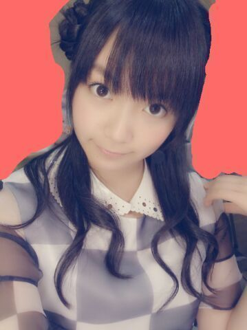
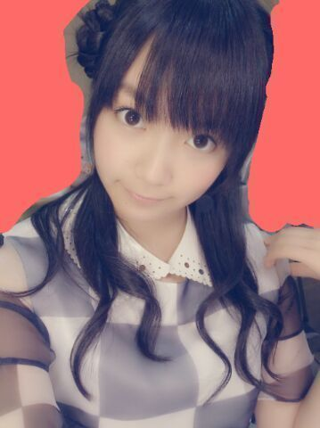
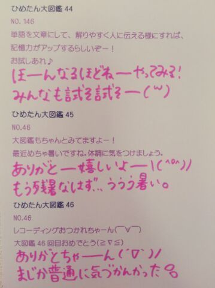

| 2013/08 29 Thu | ひめたん(*>ω<*)そ の334 |
公演４日目 名古屋！
来てくださったみなさん
ありがとうございました(*^ω^*)/
ヘアは
昼...おはなくるくる
夜...編み込みツインvol.2
夜...の編み込みツインは
あれ札幌でもやってたろ？って
言わないで(´・ω・｀)
ちょっと作りが違うんだよー
詳しく説明するとながーくなるから割愛するけど
ひとことで言うなら編み込みの太さとか！
後ろからみたらいい感じになってるんだよー
＼昼 おはなくるくる／

＼夜 編み込みツインvol.2／

ほれ！ほれほれほれほれ
最近乃木坂内でひめたんヘアが流行ってるよー♪
ちま可愛いよおおっ

そんなひめたんはメンバーさんに
「やっぱ冒険して正解だね( ^ω^ )」って
褒めていただいておるよー
とゆーことで
Zepp Nagoyaのステージは
１年ぶりに立たせていただきました！
初ワンマン懐かしいなー
あれから成長できたかなー
あのときより楽しいライブお届けできてるかなー
そしてまた絶対に名古屋帰ってきます！
あと、ここまで８公演してきて思ったのは
Zeppはファンのみなさーんとの距離が
ほんとに近いから
ひとりひとりのおかおもよく見えるし
一・体・感！
もーのーすーごーい一体感！
みなさーんの熱気が直に伝わってきて
楽しす∩^ω^∩
サイリウムもきらきらしててやばたんっ
ライブってのは
演者と観客のみなさんと一緒に
出来上がってくもんなんだなーて感じました＊
それにねコメント読んでたらね
この全国ツアーで
ひめたーんのこと気になってきたー！
って方もちらほらいらっしゃって
もうねー嬉しいよー(〃ω〃)
見つけてくれてありがとーっ
ひめたんはたくさんの乃木坂ファミリーさんと
もっと仲良しになれた気がして
素敵な夏休みだよー
来てくださったみなさん
ありがとうございました(*^ω^*)/
ヘアは
昼...おはなくるくる
夜...編み込みツインvol.2
夜...の編み込みツインは
あれ札幌でもやってたろ？って
言わないで(´・ω・｀)
ちょっと作りが違うんだよー
詳しく説明するとながーくなるから割愛するけど
ひとことで言うなら編み込みの太さとか！
後ろからみたらいい感じになってるんだよー
＼昼 おはなくるくる／

＼夜 編み込みツインvol.2／
ほれ！ほれほれほれほれ
最近乃木坂内でひめたんヘアが流行ってるよー♪
ちま可愛いよおおっ
そんなひめたんはメンバーさんに
「やっぱ冒険して正解だね( ^ω^ )」って
褒めていただいておるよー
とゆーことで
Zepp Nagoyaのステージは
１年ぶりに立たせていただきました！
初ワンマン懐かしいなー
あれから成長できたかなー
あのときより楽しいライブお届けできてるかなー
そしてまた絶対に名古屋帰ってきます！
あと、ここまで８公演してきて思ったのは
Zeppはファンのみなさーんとの距離が
ほんとに近いから
ひとりひとりのおかおもよく見えるし
一・体・感！
もーのーすーごーい一体感！
みなさーんの熱気が直に伝わってきて
楽しす∩^ω^∩
サイリウムもきらきらしててやばたんっ
ライブってのは
演者と観客のみなさんと一緒に
出来上がってくもんなんだなーて感じました＊
それにねコメント読んでたらね
この全国ツアーで
ひめたーんのこと気になってきたー！
って方もちらほらいらっしゃって
もうねー嬉しいよー(〃ω〃)
見つけてくれてありがとーっ
ひめたんはたくさんの乃木坂ファミリーさんと
もっと仲良しになれた気がして
素敵な夏休みだよー

 学校の宿題で源氏物語を論じてるんだけど
学校の宿題で源氏物語を論じてるんだけど
いいタイトルが思いつかないんだ...
一緒にタイトル考えてください(笑)
源氏物語を読んで、とかだめだから
聞いてるんだよねそーだよね。
...あの、ひめたんひとつ思ったんだけど
論文いっこも読んでないんだ(・ω・)はは、は
こんな僕でも応援してもいいでしょうか？
何をいいますか！
いつもありがとうございますっ
たくさん支えられて
ひめたんは今日も頑張れるよー＊＊＊
世界で一番お団子が似合うと思うのは・・・
贔屓目で見ちゃってるからですか？わら
うんそーだと思う( ω )
でもねひめきゅんさんなら
それで間違ってないと思うお！
ひめたーん照れ照れ。
ここまで4公演全部違うヘアできました←これは残りの公演も違うヘアって振りかなー？笑
そのつもりでここまで来ましたっ
ラスト２公演も期待しててー♪
乃木坂の曲で一番何が好きですか？？
一曲か...決め難いなー
ぐるぐるカーテン、海流の島よ、コウモリよ
とかが好きかなー(〃ω〃)
あとは自分１回も
パフォーマンスしたことないけど
世界で１番孤独なLover、音が出ないギター
とかも好き！名曲多し！
子供の頃よく何して遊んでた？
おんなのこ三姉妹なので
いろんなおもちゃ持ってたよー
シルバニアファミリーとかリカちゃんとか
基本的にインドア派☆
握手の時ブログにいつも書いてる
コメント名言えばわかりますか？
わかる自信あるよー＼( ^O^ )／
ぬいぐるみって洗濯機で洗うもんなの！？
え？違うの？
でもひめたんが大事にしてた
ピンスモちゃん(チワワ)は洗濯機でぐるぐるして
洗濯ばさみで吊るしてたよー♪るん
あ！ひめたんビームを
学校で流行らせたいと思います（笑）
一応許可いいかなー？
ぜひぜひよろしくお願いしまっすっ(<・ω・>)
BAD BOYS Jに出たいと思ったことある？
出るとしたらどの役やりたい？
うーんどうしよーかなー
ビーストレディースさん楽しそー♪
りばりば先輩って言ってお。
りばりばせーんぱいっ(*^ω^*)
明日はラスト東京公演
全員でステージ立てるのがもう嬉しくて。
いくよーって方はよろしくねー
今日はしっかり寝ること！約束よ！
嘘ついたら...ごくっ

(＊´・ω・＊)
コメント(277)
2013/08/29 22:30